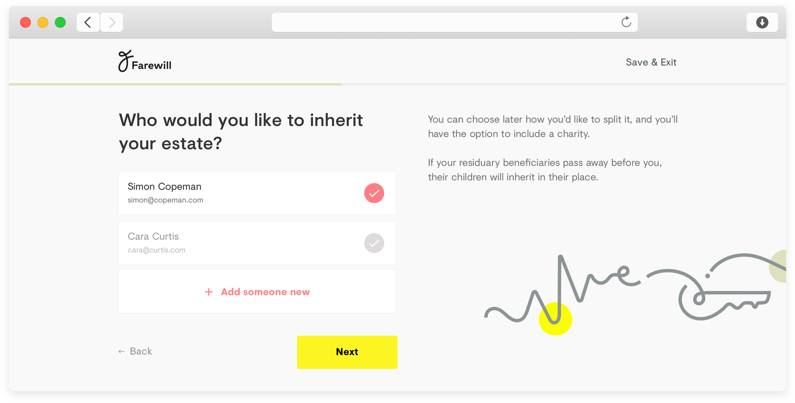
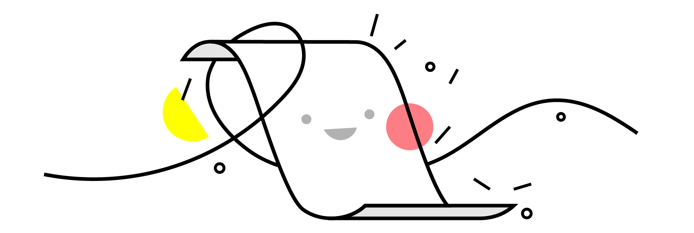
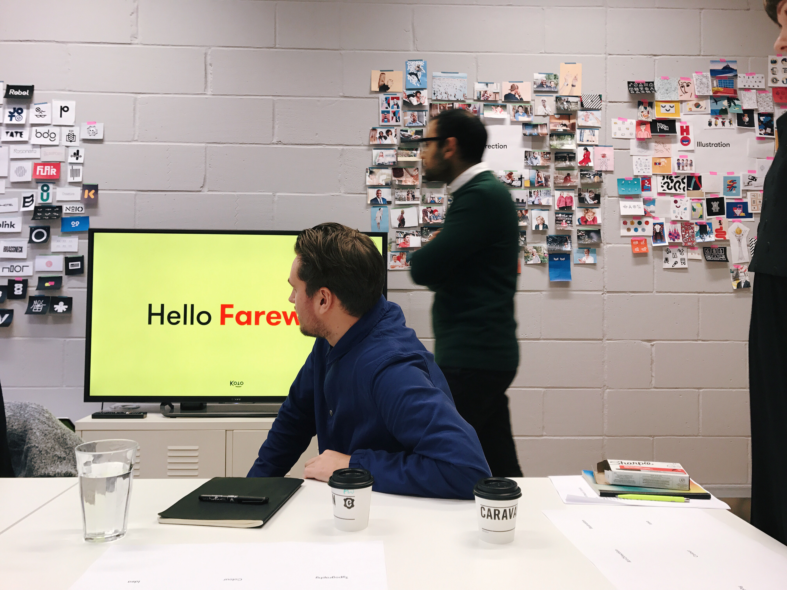
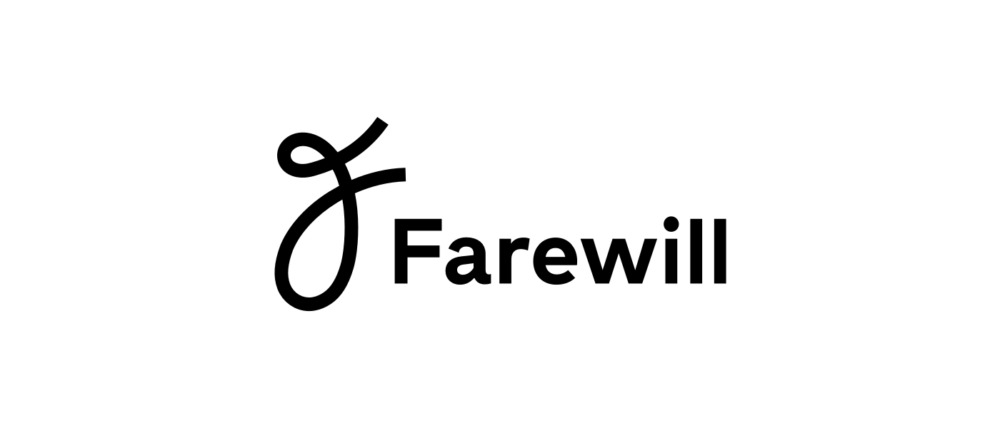
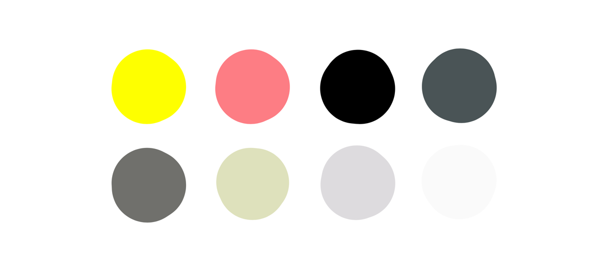

Client
Farewill
Period
December 2016 - Current
Visit
farewill.com
Brand Guidelines
Writing a will is boring and expensive, which probably explains why 97% of people die without an up to date will. Farewill exists to make writing your will easy and affordable, and to cut the bullshit out of legal services. For the last 6 months I’ve led design at Farewill, in that time we've shipped an entire re-design of the product, and a re-brand of the company.
Building the Product
Over time lawyers have made writing your will a long, expensive, and complicated process, so I set out to find out why. We started in people’s homes asking them what they thought a will was, and ended up writing our own wills with a solicitor. We worked out the small details and the large problems.
From there we broke the process out into the 4 key points of writing your will, and then built out 4 separate flows that supported people through a series of jargon free questions.

We kept questions per page to a minimum, and always had supporting text on hand

Part of the simple onboarding
Another interesting finding was that people always wanted to take their time with their will, their was no real motivation to get it finished and signed once they’d started. I explored how we could ‘gamify’ the process, to make people feel rewarded as they went through their will. This gave me the opportunity to work with Frederique Matti on a series of illustrations that would encourage people to continue writing their will.
Creating a Brand
In order to get people to want to interact with our great product, we needed a visual identity that would invite people in. In December we sat out to work with the good folk at Koto, the creators of brands such as Airbnb, Fanta & Superhi, on a visual re-brand.
After initial discussions it was clear that we wanted something stand out & memorable, something bold but not too aggressive. Initial explorations looked at each end of the spectrum — one was soft and fluid, whilst the other was bold and provocative. Neither felt quite right, so we continued to work on something that sit in the middle.
The final icon & wordmark
A unique illustration style
Color palette
Brand Usage